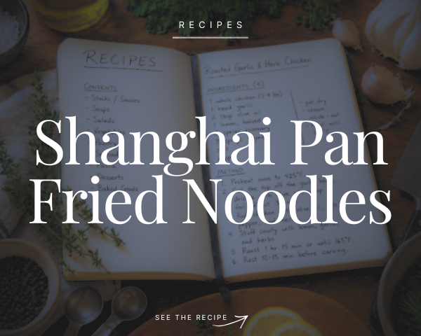
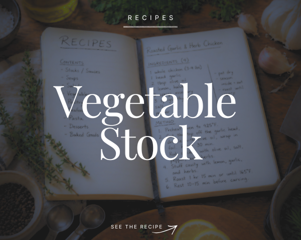

Culinary Journal
A working journal from culinary school and beyond, focused on technique, recipes, and the process of learning to cook with intention.


A working journal from culinary school and beyond, focused on technique, recipes, and the process of learning to cook with intention.

